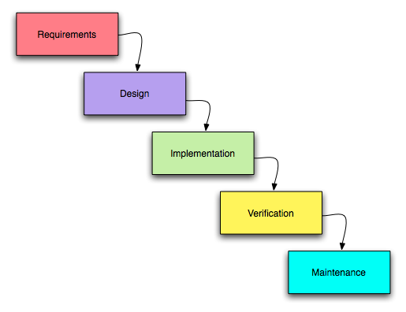
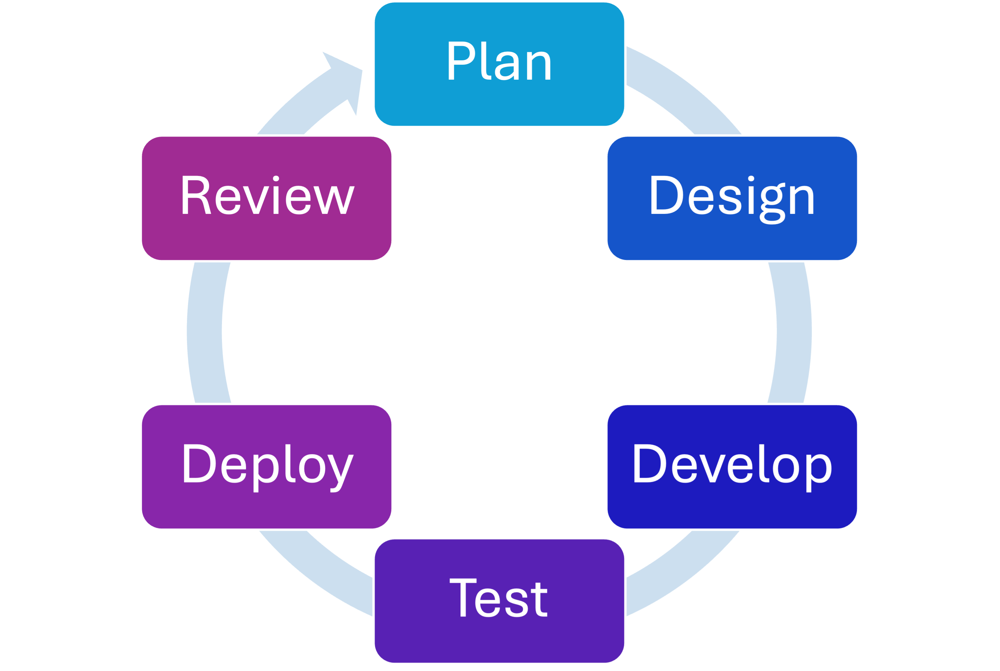
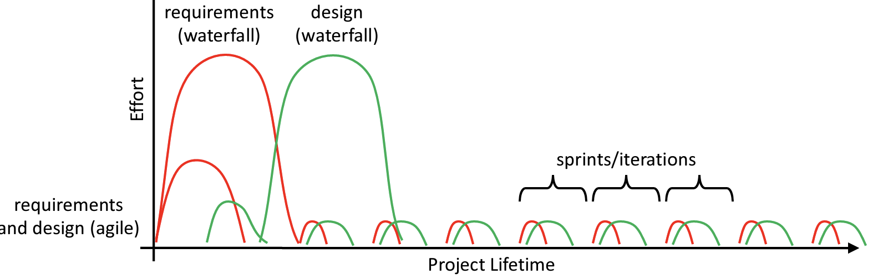

All in One View
Content from Introduction
Last updated on 2026-06-22 | Edit this page
Estimated time: 10 minutes
Overview
Questions
- What is project management?
- When should project management be used?
- What are the general phases of software development?
Objectives
- Understand the definition of Project Management.
- Understand the phases of the software development process.
Project Management Introduction
What is project management?
The Project Management Institute defines project management as:
The use of specific knowledge, skills, tools and techniques to deliver something of value to people. The development of software for an improved business process, the construction of a building, the relief effort after a natural disaster, the expansion of sales into a new geographic market—these are all examples of projects.
Who needs Project Management?
If a group of people are working together, some amount of project management methodology will help. How large, long, and complex the project is will determine how much project management discipline will be helpful. Generally, the more time and/or people involved, the more project management helps. If you are writing scripts for your own research to test out some ideas, and the project will extend some time, you (and “future you”) will probably benefit from project management. If you are experimenting with something for just one week, you probably don’t need project management.
But are you sure it’s really just “one week”?
Project management for research software
Research software has its own flavor of these questions. The “customer” might be your PI, your grant’s aims, a collaborating lab, or simply “future you” trying to reproduce a result. “Release” might mean tagging a version for a paper, and “maintenance” might mean keeping code runnable long after the student who wrote it has graduated. Even a one-person project benefits from a little structure once it needs to outlive a single deadline.
When do you need it?
Brainstorm with the people near you for a few minutes. What are some examples of situations in which project management might be useful for you in your daily life? What are some situations in which it might not be necessary?
Software Development Process
Below are (most) of the different phases of the software development process.
| # | Phase | What happens | Typical output |
|---|---|---|---|
| 1 | Requirements | Figure out what the software needs to do | A list of needs / user stories |
| 2 | Design | Decide how it will be built | Architecture, interfaces, plans |
| 3 | Implementation | Write the code | Working code |
| 4 | Testing | Confirm it does what it should | Tests, bug reports |
| 5 | Documentation | Explain how to use and maintain it | User and developer docs |
| 6 | Release / Deploy | Get it to the people who use it | A usable version |
| 7 | Maintenance | Keep it working and fix issues over time | Patches, updates |
These phases can be mixed or (sometimes) reordered. This can happen for a variety of reasons. The line between requirements and design are often blurry. Implementation, testing, and user docs often proceed concurrently. Sometimes, tests are written first in what is called Test Driven Development (TDD). Another thing to note is that the definition of roles vary. For example, the “customer” or “user” may also be the author of the software, or may be quite removed.
There are many different methodologies to help organize the software development process. In the rest of this lesson we will work through them in order:
- The Waterfall model — phases done sequentially
- The Agile methodology — iterative and responsive to change
- Agile frameworks — Scrum, Kanban, and MoSCoW in practice
- Choosing a methodology — how to decide which fits your project
- GenAI in project management — where LLMs help, and where they don’t
- Project management focuses on creating something of value in a systematic way.
- The larger or longer a project or task, the more that project management will help.
- Software development generally starts at requirements and ends at maintenance.
Content from The Waterfall Model
Last updated on 2026-06-22 | Edit this page
Estimated time: 30 minutes
Overview
Questions
- What is the Waterfall model?
- How is the Waterfall model used in practice?
- When is it appropriate to use the Waterfall model?
Objectives
- Understand the Waterfall model.
- Practice using the Waterfall model.
- Learn when the Waterfall model works well.
The Waterfall Model

The Waterfall model consists of various stages that follow sequentially – one after the other. The idea of having defined phases is to try to complete each phase before the next phase begins. This is generally referred to as the waterfall model, e.g., “Progress flows downwards through the phases, like a waterfall.” Each phase produces specific deliverables, which feed into the next phase with the assumption that the artifacts from the previous phases are actually correct.
Ideally, each phase will also identify any issues or flaws in the previous phase. When this happens, you are supposed to iterate between phases to fix any issues that arise.
Waterfall has either five or six stages, depending on the source, but for our purposes, we will consider the phases to be:
- Requirements
- Design
- Implementation
- Verification
- Maintenance
Let’s Build a House
- Split into 4 groups and grab a set of LEGOs ™️.
- (6 min) Gather requirements from your customer. Ask important questions to help you determine what needs to be done to build their dream house!
- (4 min) Determine your design. How can you satisfy the requirements with your LEGOs?
- (10 min) Build the house!
- (3 min) Show it to your customer and see how you did.
Choose two people to act as customers (either two of the attendees or other instructors/TAs). Assign one of them as “Customer 1” and the other as “Customer 2”.
Show them the appropriate images:
{kind=link}
{kind=link}
Assign two groups to each customer. The groups will ask questions together but then separate to do their individual work. The intent of this is to see how two groups who gathered the same information may approach work differently.
Instructions to give to the customers:
Stage 1 - Waterfall Model: The attendees will break up into 4 groups - two groups assigned to each customer (you). You each will be given a picture of a house. WITHOUT SHOWING THEM THE PICTURE, you will describe the requirements for the house in the picture to them. Start really basic / high level / vague like customers sometimes do. “I want you to build me a house.” The attendees should then start asking you questions about the house: “How tall? How many windows and doors?” (etc. etc.) They have 6 minutes to gather the requirements. Then they aren’t allowed to talk to you again while they build the house. After their design and implementation, they show you their “completed” house. You provide feedback on what is wrong, what is right, etc.
How was that experience? What did you like? What did you dislike?
The Waterfall Model in Real Life
It is very common in real life scenarios that there is a miscommunication of software requirements. These miscommunications may not even be identified until the software is demonstrated for clients or formal acceptance testing is completed. In traditional waterfall models, the client is often only involved in requirements phase and in acceptance-testing (or later phases).
If mistakes occur using the waterfall model, very significant amounts of work may need to be reviewed, revised, or even discarded.
What do you require?
“It’s 50x to 200x less expensive to get a requirement right in the first place than to fix a requirement after implementation.” - Boehm and Papaccio, 1988
When does Waterfall shine, and when does it struggle?
| Works well when… | Works poorly when… |
|---|---|
| Requirements are clear, well understood, and unchanging | Requirements are vague or likely to change |
| Technical implementation is well understood | The technology or approach is new/uncertain |
| The end goal is fixed and predictable | Discovery and learning are part of the work |
When the left-hand conditions aren’t met, Waterfall can lead to greatly exceeding time and financial budgets — it doesn’t handle lack of knowledge, or change, very effectively. (This is more suited to manufacturing, though even that is changing with rapid prototyping!)
That said, a lack of software-engineering discipline virtually negates all approaches — no methodology rescues a project with no process at all.
- The Waterfall model consists of stages that happen sequentially, one after another.
- The Waterfall model is helpful when requirements are very clear and well understood.
- The Waterfall model is difficult if requirements and technologies are unclear or change frequently.
Content from The Agile Methodology
Last updated on 2026-06-22 | Edit this page
Estimated time: 5 minutes
Overview
Questions
- What is the Agile methodology?
- What are the key principles of the Agile Manifesto?
Objectives
- Understand the Agile methodology.
- Learn its primary principles and what they look like in practice.
Agile Methodology
At the other end of the spectrum as the Waterfall-based methods are Agile methodologies. When issues with the Waterfall-based methods became evident in the 1990s, Agile methodologies surged in popularity because they are optimized to deal with poorly understood and/or changing requirements during development. They tend to incorporate other practices to improve software quality.

The Agile Manifesto
We are uncovering better ways of developing software by doing it and helping others do it. Through this work we have come to value:
| We value… | …over… |
|---|---|
| Individuals and interactions | processes and tools |
| Working software | comprehensive documentation |
| Customer collaboration | contract negotiation |
| Responding to change | following a plan |
Note the phrasing: the items on the right still have value — the items on the left just have more. (Nearly) everything about Agile is based on one underlying value: identify and eliminate sources of WASTE.
Agile does not mean “no plan, no docs”
A common misconception is that Agile means skipping planning and documentation. It doesn’t. Agile teams plan constantly — just in shorter cycles — and they write the documentation that genuinely helps. The shift is when and how much, not whether.
Individuals and Interactions over Processes and Tools
- People come first: keep them happy, productive, and communicating. If a process or tool isn’t working for people, change it.
- Favor lightweight, accessible tools over fancy, expensive packages.
- Communicate status, issues, and lessons learned regularly — ideally face-to-face.
- Protect people’s time: meetings are time-boxed so developers can focus.
What this looks like in practice
- Shared whiteboards and simple text formats (Markdown, reStructuredText) over heavy tooling.
- Daily status meetings kept to 15 minutes.
- Planning kept to about 1 hour per week of development effort.
- A pace that can be sustained indefinitely — without heroics.
Working Software over Comprehensive Documentation
The purpose of specs and design docs is to help get to useful, working software — customers generally don’t care about them once they have what they need. So Agile teams keep “just barely enough” documentation: enough to develop, use, and maintain the project, and no more. Good docs capture the “big picture” and the “why?” — the things you can’t easily figure out by reading the code.
Lightweight representations
- A whiteboard sketch of a UI workflow or domain model
- A 3x5 card with a brief user story on it
- GitHub Issues to capture feature requests and bugs
Customer Collaboration over Contract Negotiation
“Contract negotiation” can quietly become: “Give me a spec of what you want, then leave me alone to go build it.” That makes a project less flexible — and Agile expects requirements (or our understanding of them) to change. Instead, Agile encourages constant collaboration within the team and with clients so everyone’s needs and goals stay aligned. Some approaches do deliberately limit when requirements can change, to reduce “requirements churn.”
Responding to Change over Following a Plan
When requirements change, the current plan may no longer be the right plan. Agile teams adapt by reviewing and revising plans iteratively, over short time periods, and only plan the short- to medium-term in detail. Any effort spent on detailed long-term plans is wasted as soon as things change — and they will.
Now you know more about the theory around the Agile Methodology. In the next section, we will cover certain Agile development implementations.
- The Agile methdology is intended to be more iterative and responsive to changes in requirements.
- The Agile methodology focuses on individuals and interactions, working software, customer collaboration, and responding to change.
Content from Agile Development
Last updated on 2026-07-13 | Edit this page
Estimated time: 55 minutes
Overview
Questions
- How is the Agile methodology used in practice?
- What are the features of various Agile frameworks?
Objectives
- Explore the Scrum, Kanban, and MoSCoW frameworks.
- Practice using Scrum and Kanban with a team.
Scrum
Scrum (and its variants) is one of the most widely used Agile frameworks. Scrum is a lightweight process that aims to break work into time-boxed iterations.

Who’s who in Scrum
Scrum defines three roles. It helps to map them to today’s exercise:
| Role | Responsibility | In our exercise |
|---|---|---|
| Product Owner | Owns the vision and prioritizes the backlog; represents the customer | The “customer” |
| Scrum Master | Keeps the process running, removes blockers, protects the team | A designated member of your group |
| Development Team | Builds the product; estimates and commits to the work | Your group |
In research software these roles often blur — a PI might be the Product Owner, and a single developer may wear all three hats. The responsibilities still need an owner, even if the titles don’t.
Project Vision
In the initial phase, project envisioning takes place. How long this takes depends on the scope of the project and may take as much as 2-4 weeks.
During project envisioning, the client and the team define the following at high-level:
- A project vision: what the project is intended to accomplish. This should be no longer than a few pages at most (and often times is much shorter).
-
A project backlog: a list of key features to be
implemented. In envisioning, the features tend to be high-level and
broad
- Typically expressed as “User Stories”
- Future efforts will refine the details
-
An initial roadmap: a series of releases that
include features in the backlog
- The first release should be the “Minimal Viable Product”
Requirements as User Stories
User stories are created by describing software features or capabilities from a user’s point of view. This can be from the perspective of either regular users or an administrator. They are written in “story” form and follow a “As a ROLE, I want to GOAL, so that IMPACT” form. Here are some examples:
- “As a user, I want to view my data, so that I can see trends.”
- “As a user, I want to edit my data, so that I can fix mistakes or missing data.”
- “As an administrator, I want to change the access rights of a user, so that I can make systems secure.”
Here are some examples of user stories for non-functional requirements, though they may not become separate tasks:
- “The system is robust against changes in the database format”
- “The system responds to a database commit in less than 50 ms”
After project envisioning is completed, development occurs in a series of time-boxed iterations (1 week to 4 weeks) called sprints or iterations.
Sprint Planning
Sprints start with a planning meeting, time-boxed to 1 hour per week. For example,for a 4-week sprint, the planning meeting may be no longer than 4 hours. The developers choose features from the project backlog to be implemented in the sprint. Larger features are decomposed into smaller features and details are discussed. Feature priority is determined by the client and the team, based on relevance to the product roadmap, risk/uncertainty, level of difficulty, etc. Implementation cost of the features is determined by the developers. The developers then commit to completing those tasks within the sprint.
Estimating the work
How do developers figure out “implementation cost”? Rather than guessing exact hours, Agile teams usually estimate relative effort:
- Story points — an abstract size (often Fibonacci: 1, 2, 3, 5, 8…) capturing effort, complexity, and uncertainty together.
- Planning poker — everyone privately picks an estimate, then reveals simultaneously; big disagreements spark a useful discussion before re-voting.
- T-shirt sizes — quick, coarse sizing (S / M / L / XL) when points feel like overkill.
The goal is to create a shared understanding of how much fits in a sprint.
Defining the Work
In Scrum, the project backlog is the specification of what work remains to be done on the project. User stories are descriptions of features that can be implemented within a single sprint. Epics are features that will require multiple sprints to complete. Epics contain user stories that correspond to the epic.
Bugs are defined as software defects encountered in completed work. Periodically, backlog grooming occurs. This is when stories and epics that are no longer relevant to the project are removed (e.g. because a requirement was later found to be unnecessary).
Sprint Work
The Scrum team then completes their work throughout the sprint period. They meet for daily stand-up meetings (generally 15 minutes) in which they discuss what they did yesterday, what they plan to do today, and any blockers or issues that may have occurred.
Definition of Done
Teams agree up front on what “done” actually means — for example: code written, tests passing, reviewed, and documented. A shared Definition of Done keeps “done” from quietly meaning “works on my machine,” and makes sprint reviews honest.
Sprint Review
At the end of the sprint is a sprint demo and a retrospective discussion. This tends to be a short meeting or is first part of next sprint’s planning meeting where completed work is demonstrated to the client / stakeholders. Remember, Agile places high priority on working software and customer collaboration.
Everyone discusses lessons learned in the sprint, such as what unexpected issues had to be dealt with and what can be done better in future sprints. A sprint may include releasing/deploying software, or it may not. This depends on where the team is with respect to the product roadmap.
Other Agile Methodologies
Kanban
Japanese for “Board,” Kanban is a lightweight method for tracking work on a project. While it was originally done using a board marked into columns and Post-It notes, it integrates well with GitHub. Kanban is typically best for small to medium size projects.

Scrum and Kanban are both Agile, but they emphasize different things:
| Scrum | Kanban | |
|---|---|---|
| Rhythm | Fixed-length sprints | Continuous flow |
| Roles | Defined (PO, Scrum Master, team) | No required roles |
| Change | Wait for next sprint | Add anytime |
| Best for | Coordinating a team toward releases | Steady streams of incoming work |
These aren’t mutually exclusive — combining them is exactly what Scrumban (the upcoming exercise) is about.
MoSCoW
MoSCoW is a lightweight technique for prioritizing work, typically done in the sprint planning meeting with a focus on the next release/sprint:
| Category | Meaning |
|---|---|
| Must have | Without this, we don’t have a usable release |
| Should have | Important, but the release still works without it |
| Could have | Nice to have, not essential |
| Won’t have | Not this time (maybe never) |
Work first on Must haves, then Should haves if time remains in the sprint.
Which methodology should you use?
We’ve now seen Waterfall and several Agile frameworks. How do they compare, and how do you choose between them for a real project? That’s the focus of the next episode, Choosing a Methodology.
If you teach this lesson in two parts, this is the natural place to take your break. Session 1 ends here (Introduction through the Scrum/Kanban/MoSCoW theory); the Scrumban exercise below opens Session 2 while attendees are fresh, since it needs an uninterrupted block of time to succeed. See the Instructor Notes for the full schedule.
Scrumban
Did you know that you can combine features from both Scrum and Kanban? This is called Scrumban! In this exercise, you will be using LEGOs ™️ to build a car.

- Split into 4 groups and grab a set of LEGOs ™️.
- (4 min) Product vision: gather requirements, goals, visions, etc., from your customer.
- (4 min) Project backlog: Create a Kanban board for your project on one of the walls near you with the columns “To Do”, “In Progress”, and “Done”. Create your “backlog” by writing the features or work to be done on the sticky notes and putting them in the “To Do” column.
- (2 min) Sprint planning: Decide what work will be completed this sprint. Prioritize your backlog (try MoSCoW!) and move the sticky notes you commit to into the “In Progress” column.
- (4 min) Sprint work: BUILD!
- (2 min) Sprint review: Show what you have to your customer and get feedback. Make changes to your Kanban board as necessary (e.g., move completed work to “Done”, adjust work in “To Do” if need be).
- Repeat steps 3-5 two more times! (Three sprints total, ~8 min each.)
Choose two people to act as customers (either two of the attendees or other instructors/TAs). Assign one of them as “Customer 1” and the other as “Customer 2”.
Show them the appropriate images:
{kind=link}
{kind=link}
Assign two groups to each customer. The groups will ask questions together but then separate to do their individual work. The intent of this is to see how two groups who gathered the same information may approach work differently.
Instructions to give to the customers:
Stage 2 - Agile Methodology / Scrumban: The attendees will break up into 4 groups - two groups assigned to each customer. You will be given a picture of a car. WITHOUT SHOWING THEM THE PICTURE, you will describe the requirements for the car in the picture to them. Start really basic / high level / vague like customers sometimes do. “I want you to build me a car.” The attendees should then start asking you questions about the house: “How many wheels? How many windows and doors?” (etc. etc.) They don’t get as much time for this - only 4 minutes. Then they go through a Kanban board task writing / backlog creation stage for 4 minutes. They will then do a “sprint” / iteration (about 8 minutes each: 2 min plan, 4 min build, 2 min review) and try to get something created. They bring it back to you. You tell them what’s right / wrong. They adjust their Kanban board / plan their next “sprint” (repeat for three total iterations). The slightly longer planning time is intentional — prioritizing and re-planning between sprints is the core skill this exercise teaches.
How was that experience? What did you like? What did you dislike?
You now have hands-on experience with both ends of the methodology spectrum. Next, we’ll look at how to choose between them.
- The Scrum framework focuses on time-boxed iterations of work with consistent customer feedback.
- The Kanban method relies on visual tracking of work.
- The MoSCoW method focuses on labeling work as “Must haves”, “Should haves”, “Could haves”, and “Won’t haves.”
Content from Choosing a Methodology
Last updated on 2026-06-22 | Edit this page
Estimated time: 7 minutes
Overview
Questions
- How do Waterfall and Agile compare?
- Which factors should guide my choice of methodology?
- Do I have to pick just one?
Objectives
- Compare the Waterfall model and Agile approaches side by side.
- Identify the factors that make one methodology a better fit than another.
- Recognize that real projects often blend approaches.
Two Ends of a Spectrum
You’ve now seen the Waterfall model and Agile frameworks like Scrum and Kanban. It’s tempting to ask “which one is best?” — but the better question is “which one fits this project, this team, right now?”
Agile does requirements gathering and design incrementally, mostly just before implementation. A well-executed Waterfall project can actually be less costly overall — as long as the requirements and design don’t change. The catch, of course, is that they usually do.

The graph shows the trade-off: Waterfall front-loads a large planning and design effort, betting that it gets things right early. Agile spreads that effort out, accepting some ongoing cost in exchange for the ability to absorb change.
What to Weigh
No single factor decides it. Look at the project as a whole:
| Factor | Leans Waterfall | Leans Agile |
|---|---|---|
| Requirements clarity | Clear and complete up front | Fuzzy or still being discovered |
| Likelihood of change | Low — stable scope | High — expect it to shift |
| Stakeholder availability | Involved early, then hands-off | Available throughout |
| Team size and co-location | Large, distributed, formal | Small, communicative |
| Timeline and delivery | One big delivery at the end | Frequent, incremental releases |
| Risk and uncertainty | Well-understood domain | Novel problem or technology |
| Regulatory / fixed-scope needs | Strict documentation, fixed contract | Flexible scope |
If most of your answers fall in the right-hand column — which is common for research software — an Agile approach will usually serve you better.
Research software in practice
Research software rarely starts with stable requirements: the whole point is often to explore something nobody has built yet. That pushes most research projects toward Agile. But pieces of Waterfall still show up — a grant proposal is essentially an upfront requirements-and-design document, and a paper deadline is a fixed release date. Recognizing which parts of your project are stable and which are exploratory helps you apply the right approach to each.
It’s Not Either/Or
In practice, very few teams run any methodology exactly as written. Hybrids are the norm:
- Waterfall-ish planning, Agile execution — do enough upfront design to satisfy a grant or stakeholders, then build iteratively in sprints.
- Scrumban — Scrum’s cadence with Kanban’s flexible flow.
- Phase-appropriate — a stable, well-understood component might be built Waterfall-style while an experimental one is developed iteratively.
The methodologies are tools, not identities. Borrow what helps and drop what gets in the way — which is itself a very Agile thing to do.
Which fits your project?
Think of a software project you’re actually working on (or about to start).
- Where do its requirements fall on the clarity/change spectrum?
- Which approach — or blend — would fit best?
- What’s one practice from this lesson you could adopt right away?
- There’s no universally “best” methodology — only right-sized for a given project, team, and moment.
- Requirements clarity and likelihood of change are the biggest factors; stable scope favors Waterfall, change favors Agile.
- Most research software leans Agile, but real projects commonly blend approaches.
Content from GenAI in Project Management
Last updated on 2026-07-13 | Edit this page
Estimated time: 5 minutes
Overview
Questions
- Where can generative AI genuinely help with project management?
- What are the risks of relying on it?
- What should research software engineers keep in mind?
Objectives
- Identify practical ways generative AI can support project management tasks.
- Recognize the risks and limitations of using genAI in a project workflow.
- Understand special considerations for using genAI in research software.
A New Tool in the Toolbox
Generative AI — large language models (LLMs) like ChatGPT, Claude, and others — has quickly become part of many developers’ daily workflow. These tools are good at working with text, and a surprising amount of project management is text: user stories, backlogs, meeting notes, status updates, documentation.
Used well, genAI can take the friction out of the routine writing-and-organizing parts of project management, freeing you to spend time on the parts that need human judgement. Used carelessly, it can introduce confident-sounding mistakes and erode the very communication that good project management depends on.
Where It Helps
| Task | How genAI can help |
|---|---|
| Drafting user stories | Turn a rough feature idea into well-formed “As a…, I want to…, so that…” stories |
| Breaking down epics | Suggest how to decompose a large feature into sprint-sized tasks |
| Backlog generation | Brainstorm candidate features or edge cases you might have missed |
| Estimation support | Surface considerations that affect complexity (a starting point, not the answer) |
| Summarizing | Condense standup notes, long issue threads, or a sprint’s activity |
| Retrospectives | Cluster feedback into themes and suggest action items |
| Documentation | Draft READMEs, docstrings, changelogs, and “how to contribute” guides |
| Communication | Rephrase a technical update for a non-technical stakeholder |
The common thread: genAI is best as a fast first draft and a brainstorming partner, as long as you then review, correct, and own.
Where to Be Careful
Keep a human in the loop
- Hallucination. LLMs can produce plausible, fluent, and wrong output — invented requirements, mis-estimated tasks, fabricated references. Always verify.
- False confidence. The polished tone makes errors easy to miss. Treat output as a draft from an eager junior colleague, not an authority.
- Eroding communication. Agile values individuals and interactions. If an AI-summarized standup replaces the team actually talking, you’ve optimized away the point of the meeting.
- Data, privacy, and IP. Anything you paste into a third-party tool may leave your control. Don’t share confidential, sensitive, or proprietary information without knowing the tool’s data policy.
- Accountability stays human. The AI doesn’t own the deadline, the bug, or the stakeholder relationship — you do.
For Research Software Specifically
Research considerations
- Reproducibility and provenance. If genAI shaped your plan, design, or docs, keep a record of how. Reproducibility is a core value of research software.
- Disclosure. Many journals, funders, and institutions now have policies on disclosing AI use. Check them before you rely on AI-generated content in outputs.
- Sensitive and unpublished data. Unpublished results, participant data, and embargoed work generally should not go into external AI tools.
- Grant and reporting language. GenAI can help draft progress reports and broader- impacts text — but you remain responsible for accuracy and for meeting the funder’s expectations.
The Bottom Line
GenAI is a genuinely useful project-management assistant for the routine, text-heavy work — drafting, summarizing, brainstorming, reorganizing. It is not a substitute for the human judgement, communication, and accountability that make a project succeed. The teams that benefit most are the ones who already understand good project management, and use AI to do it faster — not to avoid doing it at all.
- GenAI excels at the text-heavy parts of project management: drafting stories, summarizing, and brainstorming.
- Always verify AI output — hallucination and false confidence are real risks, and accountability stays with you.
- For research software, mind reproducibility, disclosure policies, and never share sensitive or unpublished data with external tools.
- GenAI augments good project management; it doesn’t replace human judgement.